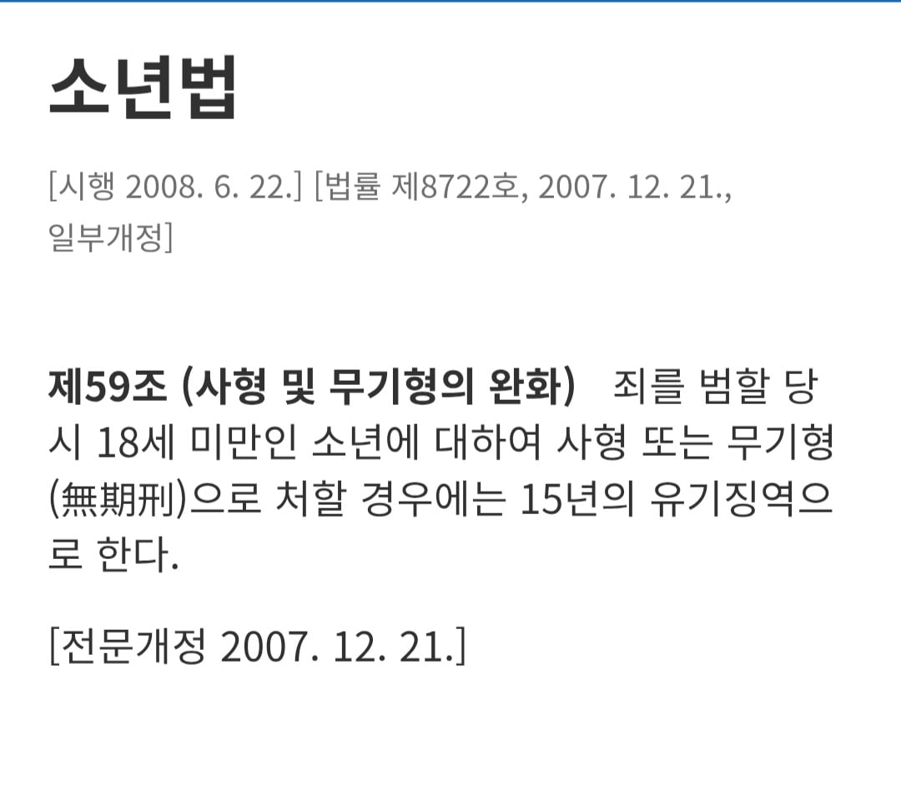
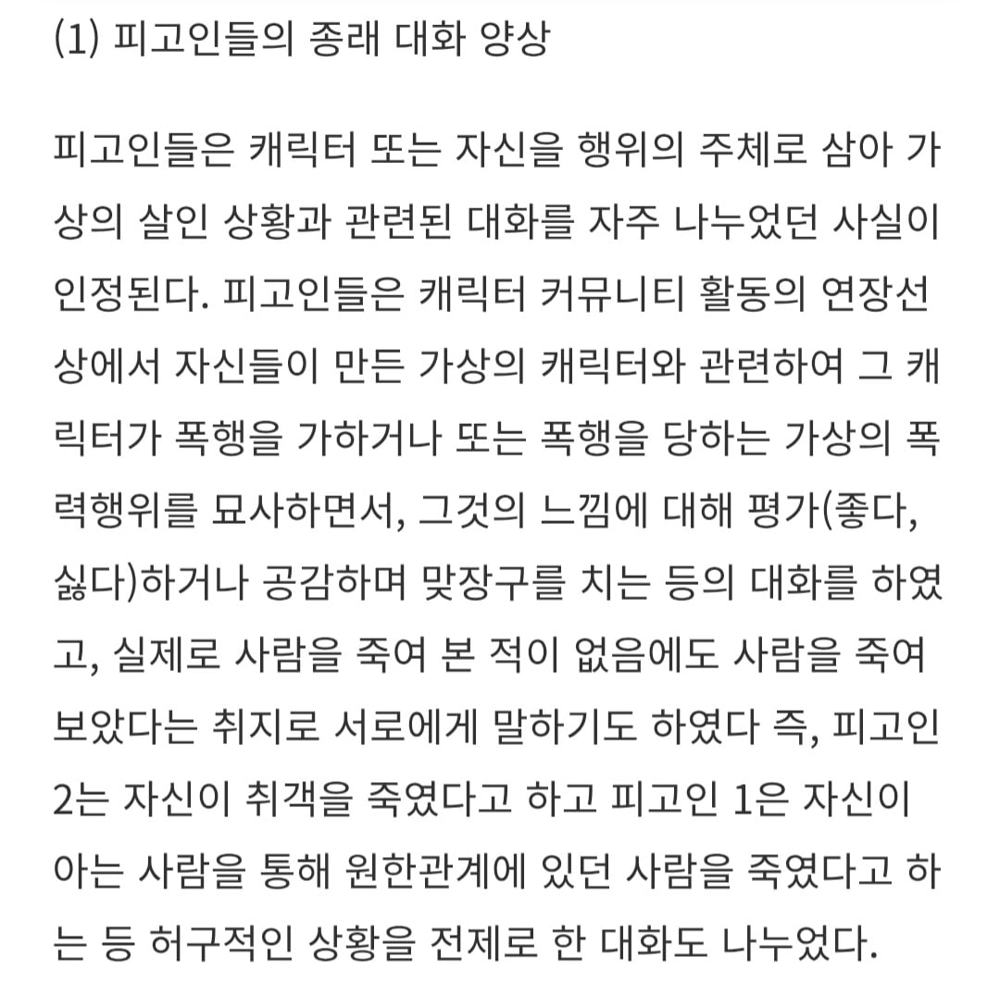
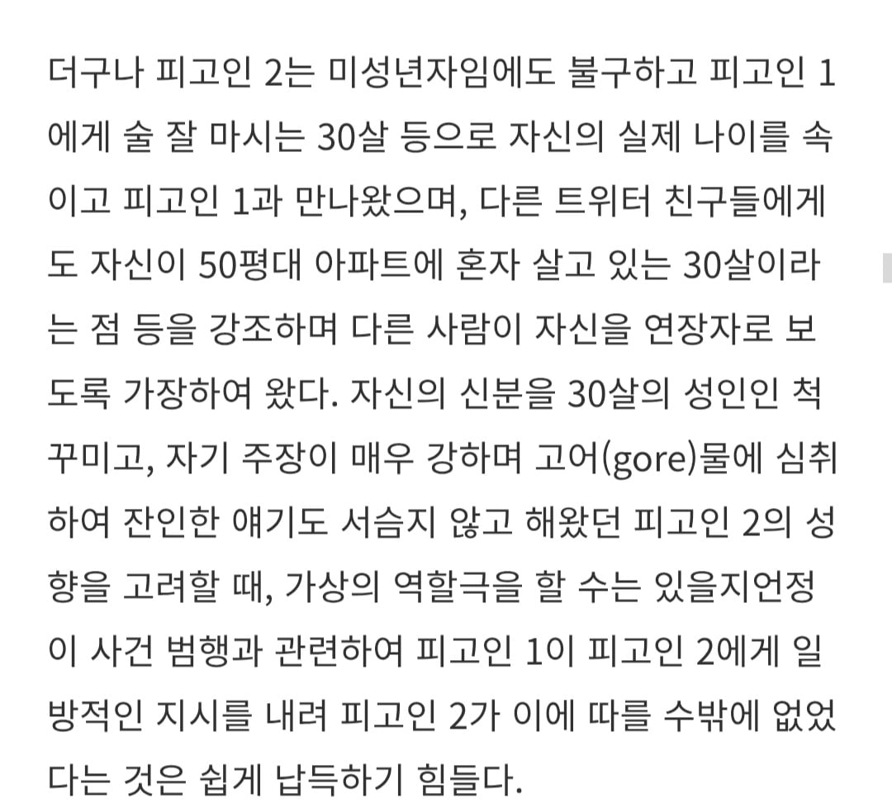
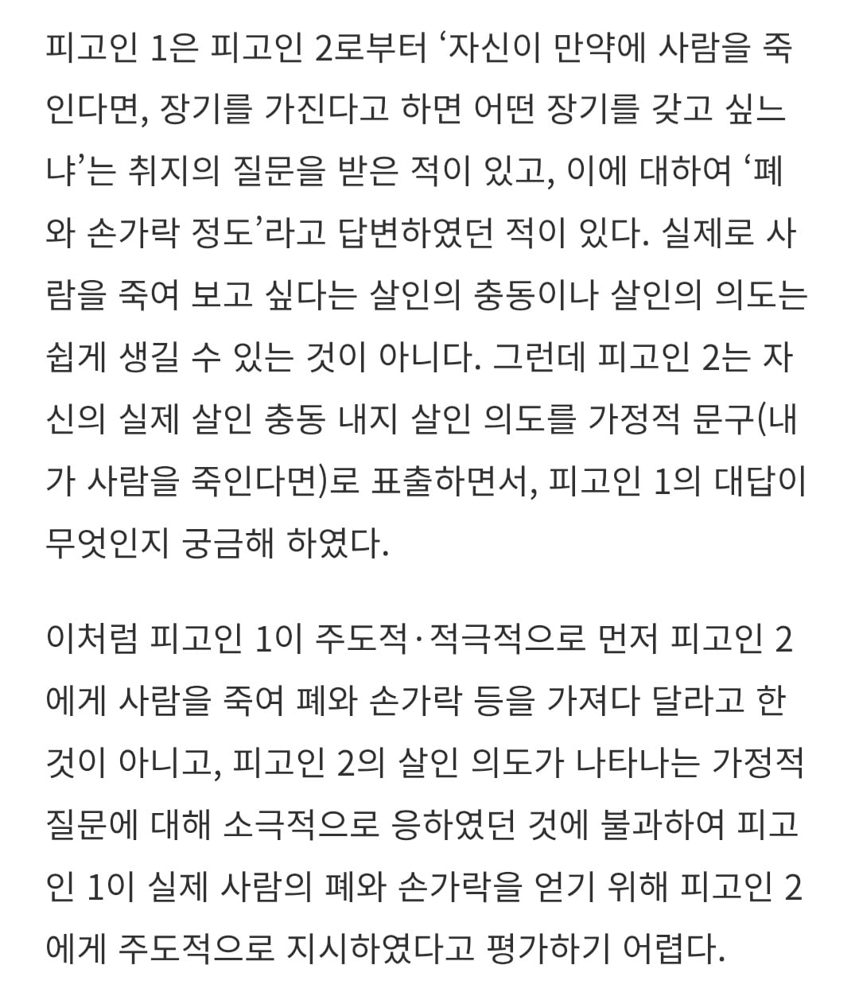

개드립간 글: https://www.dogdrip.net/727787802
왜 형량이 20년 13년이냐는 말이 계속 나오는 건인데
일단 주범인 김XX는 당시 만 17세 미성년자인데

원칙적으로 미성년자는 15년이상 선고를 못함
그런데 예외적으로 20년까지 가중이 가능함
즉 주범은 최대한으로 때려맞았음
다음은 공범인 박XX건인데
1심은 살인공모죄가 인정되면서 무기징역이 나왔지만
2심에선 살인방조죄로 죄목이 바뀌면서 13년이 나옴
살인공모죄가 인정되려면 단순히 범죄를 알고 있었는데 말리지 않았다던 정도로는 부족하고 범죄에 있어 다른 사람의 행위를 통해 자기의 의사를 실행에 옮기는 상황이어야 함

저 둘은 평소에도 서로 사람을 죽이지 않았음에도 원한관계의 있는 사람을 죽였다고 허구적인 내용을 나눴음

주범인 김XX는 미성년자인 본인이 공범인 박XX에게 지배관계에 놓여있었다 하였는데 평소 김XX가 본인을 만 30세라 주장하며 연장자마냥 행동하였고 자기주장도 매우 강해 인정되기 힘듦

이 상황에서 만약 사람을 죽인다면 어느 장기를 가지고 싶냐는 가정을 담은 주범 김XX에 질문에 공범 박XX가 폐와 손가락 정도라고 답한다 하여도 공동정범으로까진 보기 어렵다는게 항소심 법원의 판단
뭐랄까 단순히 100년전만해도 목이 매달려 우리 공동체에서 배제될 유전자가
저렇게 꾸역꾸역살아서 후대를 이으면 제2의 사건이 나지않을까